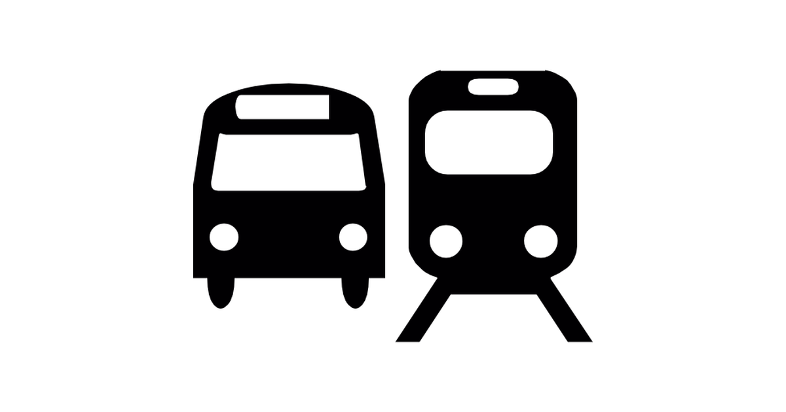

Transportation

Public transport BVG
Includes Sbahn, Ubahn, trams, buses and Ferries.
Berlin is divided into three tariff zones: AB, BC und ABC. Tariff zone AB includes the urban area to the city boundary, Zone ABC - Berlin's surrounding + Potsdam Hauptbahnhof.
Tickets: single, daily, weekly, monthly, annual & group Tickets.
Prices and conditions for tickets provided here https://www.bvg.de/en/Tickets/fares
Bicycles
The city is almost completely flat and has pretty decent cycle lanes so it’s really a great city to cycle around.
Don’t buy something brand new and shiny because it will most likely be stolen. Invest in a really good lock (or three) to make sure that your bike stays yours.
Where to buy a bicycle?
Go for a second-hand model either via a shop or try your luck with classified ads such as eBay Kleinanzeigen, Facebook groups.
Check flea market ( but just bear in mind that there’s a high likelihood it will have been stolen).
Helmets are not required.
Renting of a bicycle/ scooter/ car
To rent a bicycle is convenient and affordable alternative for occasional cyclists.
Here are some providers: LIDL-Bike, DEEZER nextbike, Mobike, LimeBike, Byke and Donkey Republic.
They are parked in various locations around the city and everyone can rent them via app or station terminals.
swapfiets.de- good option for a long term rent in Berlin
E-scooter services: Cierc, Tier, Bird, Lime, Voi
Car sharing - DriveNow, ubeeqo, car2go
Using your own car: What do you need to know
If you wanna bring a car outside of EU
It will be subject to a 10% import duty and 19% VAT.
In order to avoid paying this you have to can prove that you are bringing your car into the country as “personal property moved in connection with a transfer of residence.
you wanna bring a car from EU country
If your car is used then you can bring it to Germany free from any customs duty providing you have proof VAT was paid in its country of origin. You may also need to able to show:
Proof of ownership
Original registration papers
Proof of insurance
Emissions test certificate if the car is more than three years old
Certification from the German Federal Motor Vehicle registry that the car has never been registered in Germany.
If your car is ‘new’, that is less than six months old or with less than 6000 km in mileage, then you will probably have to pay the 19% German VAT. If you already paid the VAT in the country of origin then you should be able to get a reimbursement upon registration of the car in Germany.
You will need an Anmeldung for your vehicle as well.
Using your own car: What do you need to know
Driving license, driving school, recognition of driving license
To get German driving license, you must take driving lessons (14 hours of theory and 12 hours of driving). Next, you must take a theoretical driving exam (on a computer) and a practical driving exam (on a car).
If you already had a driving license in a non-EU, you can drive for 6 months after moving to Germany. After that, your licence is not valid. You must trade your foreign license for a German one.
Go back to dashboard and complete this step